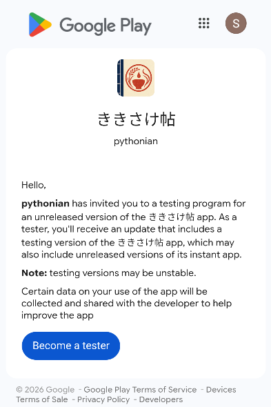
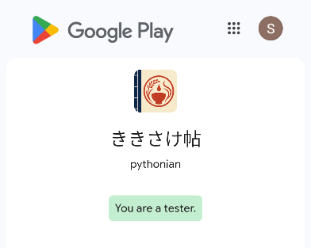
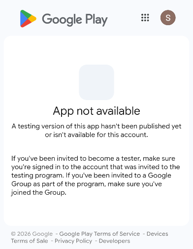

日本酒の記録アプリ「ききさけ帖」を、公開前に試してくれる方を募集しています。
記録のしやすさ、選択肢の分かりやすさ、使っていて迷う点をフィードバックお願いします。
参加までの基本の流れ
Google Playのクローズドテストは、事前にテスター用のGmailアドレスを登録してから参加リンクを開く流れになります。
- 1. opt-inする 登録完了後、参加リンクを開いてテスター参加に同意します。
- 2. Google Playからインストール opt-in後に表示されるGoogle Playのリンク、またはGoogle Playのアプリページからアプリをインストールします。
- 3. 日本酒を登録 銘柄、酒造、画像など、試したい日本酒の情報を登録します。
- 4. レビューを書く 色・香り・味を選び、飲んだ時の印象を記録します。
- 5. フィードバック送信 分かりにくい点、動作の問題、欲しい項目をフォームから送信します。
Gmailアドレス収集フォームは準備中です。公開後、このページから案内します。
Google Play クローズドテストの opt-in 手順
Gmailアドレスの登録完了後、Android端末またはブラウザで以下の順に進めてください。
- Google Playで使うGoogleアカウントにログインします。複数アカウントを使っている場合は、登録したGmailアドレスのアカウントを選んでください。
- クローズドテスト参加リンクを開きます。
- 画面に表示される案内を確認し、テスター参加に同意します。
- opt-in完了後に表示されるGoogle Playの画面、またはGoogle Playのアプリページから、ききさけ帖をインストールします。



このアプリでできること
日本酒を記録
銘柄、酒類、酒造、画像などの基本情報を保存できます。
レビューを複数回保存
同じ日本酒でも、温度や場面ごとにレビューを残せます。
選択式で評価
色・香り・味を選ぶ形式にして、初心者でも記録しやすくします。
クローズドテストについて
現在、Google Playのクローズドテストを案内しています。テスト参加者には、アプリの動作確認、記録しやすさ、表現項目の分かりやすさについてフィードバックをお願いする予定です。
このアプリは日本酒の記録を支援するものであり、酒類の販売、購入、飲酒の促進を目的としたものではありません。日本国内では20歳未満の飲酒は法律で禁止されています。
プライバシー
現バージョンでは、入力した日本酒情報、レビュー、画像は端末内に保存され、開発者のサーバーやクラウドには送信されません。